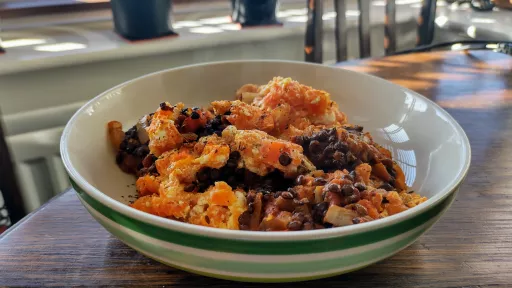

Spiced veggie shepherd's pies
Step-by-step method for making Spiced veggie shepherd's pies yourself.
Servings: 4
Total: 1 hr 15 mins
 Vegetarian
Vegetarian
Ingredients
- 1 tbsp olive oil
- 1 onion, finely chopped
- 1 carrot, finely diced
- 1 stick celery, finely diced
- 3 cloves garlic, finely chopped
- 1 tsp ground coriander
- 1 tsp ground cumin
- 1 tsp ground cinnamon
- ½ tsp crushed chillies
- 1x 400 g tin chopped tomatoes
- 400 ml hot vegetable stock
- 1x 400 g tin Puy or green lentils, drained and rinsed
- 2 tbsp sundried tomato paste (optional)
- 1 tsp garam masala
- 1 tbsp chopped coriander
- 1 tbsp chopped mint
For the mashed carrot topping
- 1 tsp cumin seeds
- 750 g carrots, peeled and cut into 2 cm slices
- 500 ml hot vegetable stock
- knob of butter
- 1 tbsp chopped coriander and mint leaves
- 200 g feta cheese, crumbled
- 1 tbsp chopped mint leaves
Instructions
- Heat the oil in a deep frying pan, cook the onion1,carrot1andcelery1 stickgently for 10 minutes, until almost softened. Stir in thegarlic3 cloves,coriander1 tsp,cumin1 tsp,cinnamon1 tspandchilli½ tsp, and cook for a further 2 - 3 minutes.
- Stir in the tomatoes1x 400 g tinand 400 mlstock400 ml. Bring to the boil, reduce the heat and simmer gently for 15 minutes. Stir in thelentils1x 400 g tin,tomato paste2 tbsp, if using, andgaram masala1 tsp; simmer for a further 5 minutes. Season to taste. Stir in the herbs.
- Meanwhile, put the cumin seeds1 tspin a large saucepan, toast over a medium heat for 2 minutes, then add thecarrots750 g, cover with thestock400 mland bring to the boil. Cover with a lid and simmer for 15 minutes until tender. Drain well through a sieve (to keep thecumin seeds1 tsp), then return to the pan and mash with thebutterknob. Stir in the herbs, then briefly fold in the feta. Preheat the oven to 180°C/Gas 6.
- Transfer the lentil mixture to 4x 300 ml individual pie/baking dishes (or a 1.5 - 2 litre capacity baking dish). Spoon the carrot1mash on top of the pies (or pie).
- Transfer to a baking sheet and bake for 25-30 minutes until bubbling and golden.
- kcal 353
- fat 17.0 g
- saturates 10.0 g
- carbs 31.0 g
- sugar 22.0 g
- fibre 12.0 g
- protein 17.0 g
- salt 4.2 g